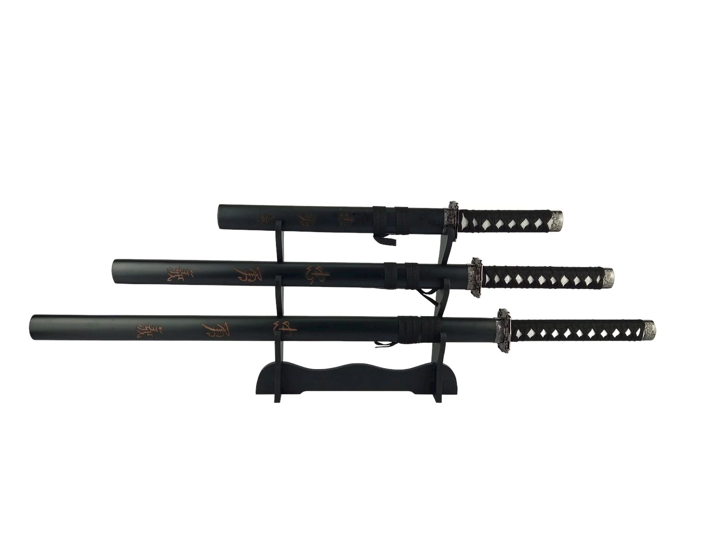
A Espada Sagrada
No Japão, a lâmina transcende a função de ferramenta: ela é a extensão da alma do guerreiro e um artefato de profunda espiritualidade. Desde os períodos mais remotos, a simbologia de uma espada supera qualquer definição moderna de "arma de corte", carregando um peso metafísico que a linguagem contemporânea mal consegue tatear. Embora a Katana domine o imaginário popular, cada variação de lâmina possuía um propósito sagrado e um lugar específico na hierarquia social, sendo um privilégio restrito àqueles que detinham a linhagem ou o mérito para portá-las.
Mais do que um instrumento de guerra, a espada era — e ainda é — o símbolo máximo de nobreza e distinção. Sua própria criação não era um processo industrial, mas um ritual quase religioso de cristalização da matéria, onde o ferreiro e o aço se fundiam em uma obra de arte única. Possuir uma lâmina significava ser guardião de um fragmento da história e da honra do Japão, um emblema de importância que exigia dignidade absoluta de quem a empunhava, independentemente de sua forma:
- Katana - O tipo mais icônico e conhecido de espada japonesa, tornou-se proeminente no período Kamakura (1185–1333). As katanas são caracterizadas por sua lâmina curva de um só gume, guarda circular ou quadrada e empunhadura longa para acomodar duas mãos. A lâmina geralmente tem cerca de 60-80 cm de comprimento.
- Tachi - O Tachi é anterior à katana e foi amplamente utilizado no período Heian (794 a 1185). Tachis geralmente são mais longos que katanas, com uma lâmina altamente curva, projetada para combate montado. O Tachi era usado pendurado no cinto com a borda voltada para baixo, diferenciando -o da Katana.
- Kodachi - O Kodachi, ou 'pequeno Tachi', foi usado durante o período Kamakura. É mais curto que um Tachi, mas mais longo que um Tanto, tipicamente com comprimento entre 60 cm e 65 cm. Essas espadas eram usadas como armas secundárias em combate corpo a corpo.
- Odachi / Nodachi - Os Odachi ou Nodachi são espadas excepcionalmente grandes, tipicamente ultrapassando 100 cm. Foram usados no final do período Kamakura (1333-1573) e foram projetados para serem usados a cavalo ou contra unidades de cavalaria.
- Wakizashi - O Wakizashi foi usado desde o período Muromachi (1333–1573) e era a espada companheira da Katana, compondo o Daisho, ou 'longo e curto'. O Wakizashi é mais curto que uma katana, variando de 30 a 60 cm, e era usado para lutas internas, seppuku ou como espada reserva.
- Tanto - Durante o período Heian, o Tanto, uma faca ou adaga com lâmina curta medindo entre 15 e 30 cm, era bastante comum. Pode ser usado para fatiar, mas geralmente era usado como ferramenta de esfaqueamento.
- Naginata - Entre os séculos XII e XIV, samurais, monges e tropas de infantaria usavam frequentemente a Naginata, uma arma de haste. Possui um cabo longo de madeira dura finalizado com uma lâmina curva.
- Tsurugi - O Tsurugi ou Ken é uma espada de dois gumes que era comumente usada antes do período Heian. Está principalmente associado ao uso religioso ou cerimonial, especialmente rituais xintoístas.
- Shinobigatana - A Shinobigatana, às vezes chamada de "espada ninja", é uma espada reta de um único gume e 60 cm de comprimento . Foi utilizado pelos Shinobi, frequentemente conhecidos como ninjas, durante a era Sengoku (1467–1615).
- Yoroi-dōshi - O Yoroi-dōshi é um tipo de Tanto projetado para perfurar armaduras. É mais curto e resistente do que um Tanto típico , com comprimento de lâmina que pode variar de 20 a 22 cm.
- Chokutō - Uma das primeiras variedades de espadas no Japão é a Chokuto, que data da era Nara (710–794).
- Nagamaki - A Nagamaki, que significa "enrolamento longo", é um tipo de espada japonesa tradicionalmente fabricada com cabo extra longo. Foi usado do período Kamakura até o período Muromachi.
- Bokken - Embora o bokken (espada de madeira) não possua uma lâmina de aço genuína, ainda assim é usado em treinamentos como uma espada japonesa. Apesar de ter um formato semelhante ao de uma katana, é feito de madeira e não é letal.
- Uchigatana - A Uchigatana é a predecessora da Katana moderna, popular durante o período Muromachi. Era uma arma projetada para combate um a um a pé, segurada com a lâmina cortante voltada para cima .
- Yari - O Yari é uma lança tradicional japonesa, ou mais precisamente, uma arma de estocada. Elas eram muito populares devido ao longo alcance e facilidade de produção em comparação com as espadas.
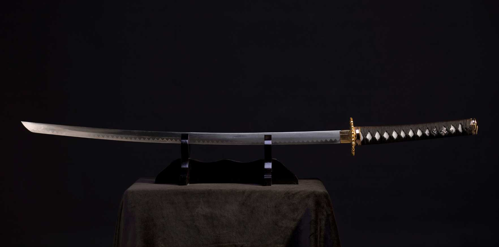
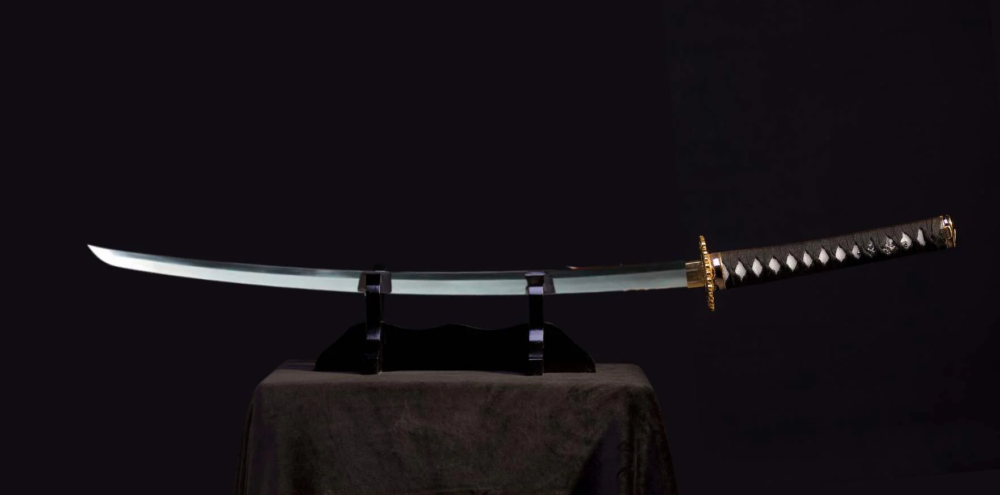
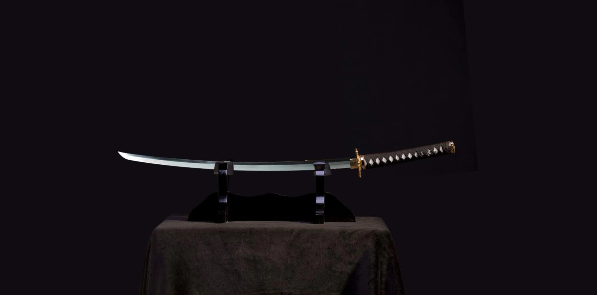
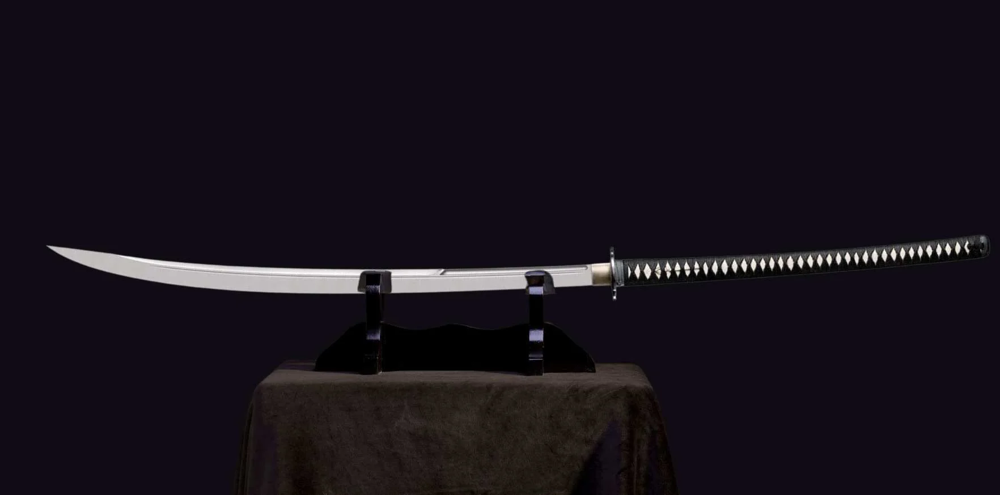
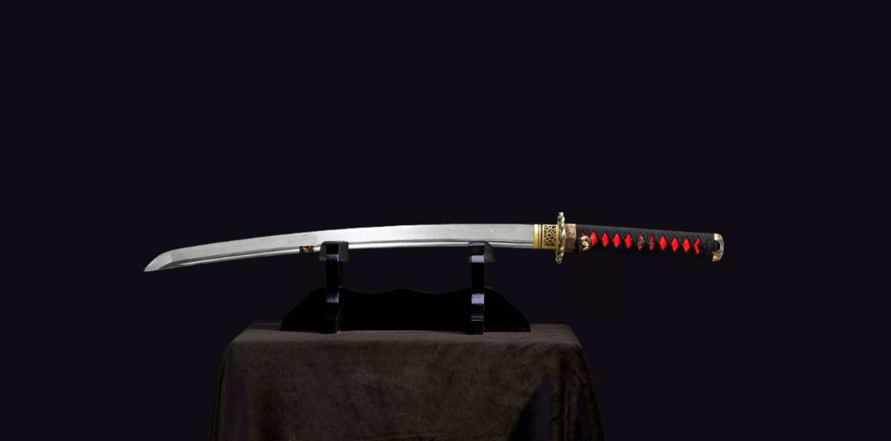
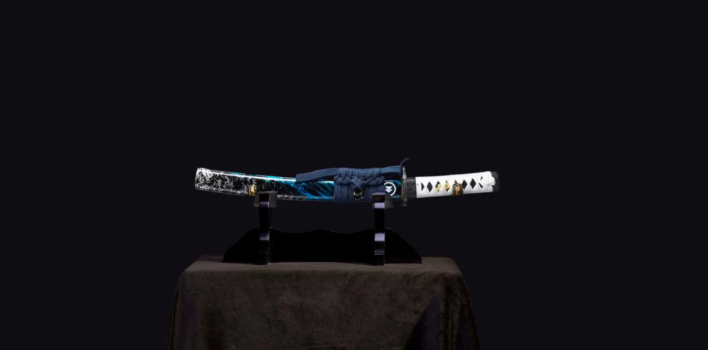
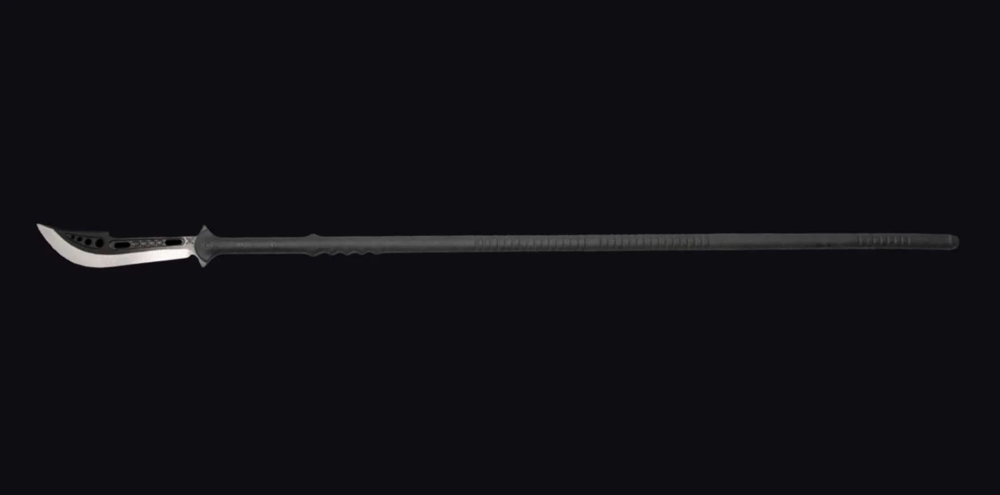
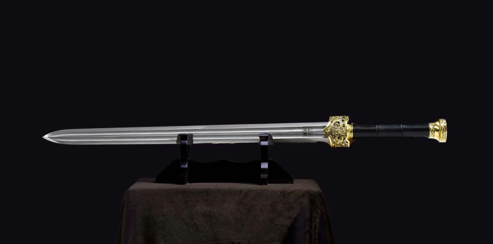
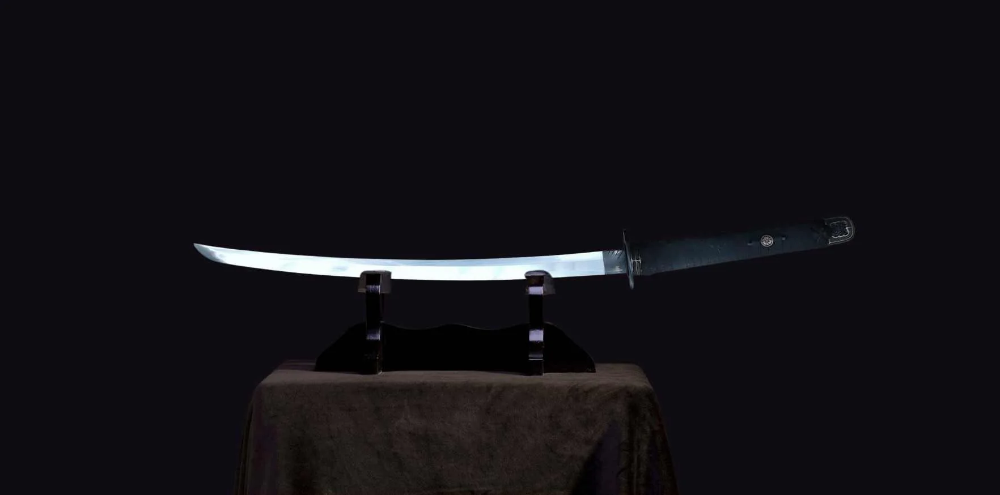
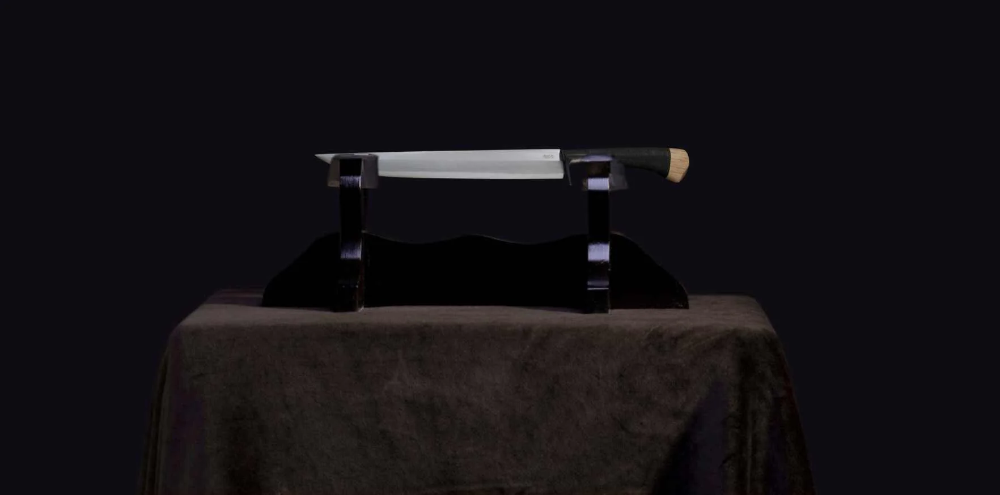
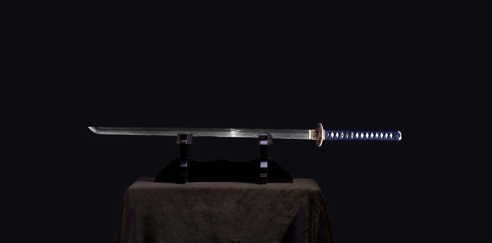
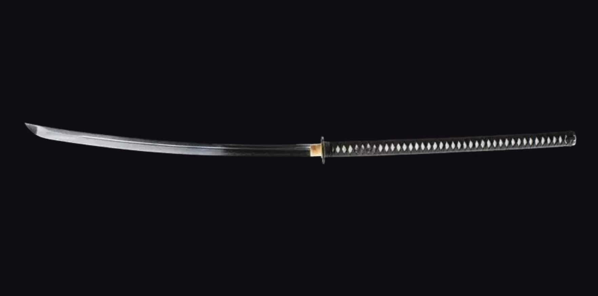
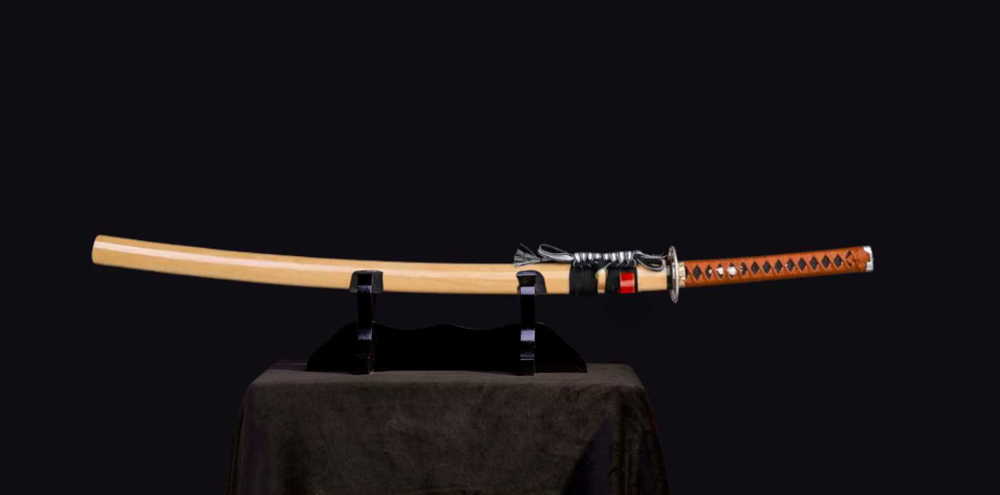
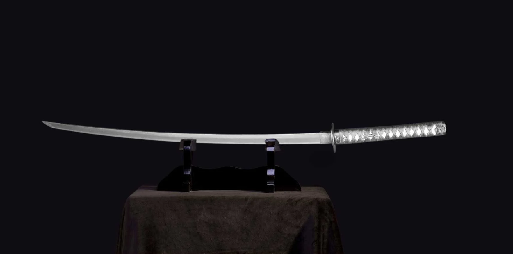
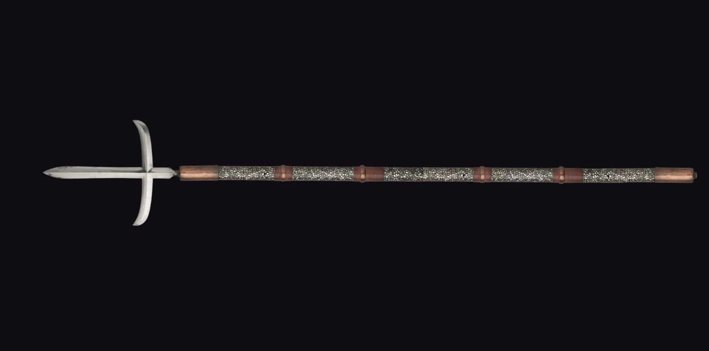